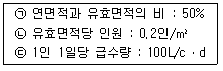
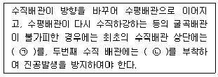
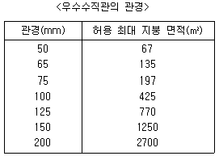
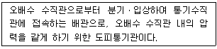
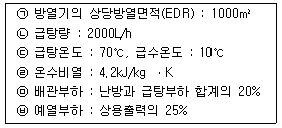
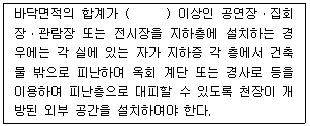
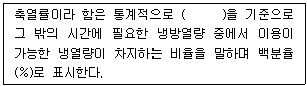
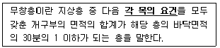
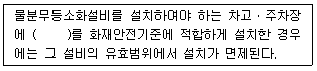

건축설비산업기사 (2020-06-06 기출문제)
1과목: 건축일반
1. 실외로의 공기유출 방지효과와 아울러 출입인원의 조절을 목적으로 설치하는 문은?
- 셔터
- 망사문
- 회전문
- 자재문
(정답률: 92%)

2. 다음 중 열관류율의 단위로 옳은 것은?
- kcal/kgㆍ℃
- mㆍ℃/kcal
- W/mㆍ℃
- W/m2ㆍK
(정답률: 76%)
3. 학교의 배치형식 중 분산병렬형의 특징이 아닌 것은?
- 편복도로 할 경우 복도면적을 많이 차지하지 않고 유기적인 구성이 가능하다.
- 일조, 통풍 등 교실의 환경조건이 균등하다.
- 구조계획이 간단하다.
- 동선이 길어지고 각 건물사이의 연결을 필요로 한다.
(정답률: 52%)
4. 주택설계의 기본방향과 가장 거리가 먼 것은?
- 주부 동선의 확장
- 가족 본위의 주택
- 가사노동의 경감
- 생활의 쾌적함 증대
(정답률: 84%)
5. 조립식 구조(precast concrete)의 특징으로 옳지 않은 것은?
- 연결부위의 응력 전달이 확실하다.
- 주위 환경의 영향을 덜 받는다.
- 시공 속도가 개선된다.
- 대량생산으로 품질이 향상된다.
(정답률: 75%)
6. 상점별 조명계획에 관한 설명으로 옳지 않은 것은?
- 서점-조도를 균일하게 함
- 제화점-바닥까지 충분한 조도가 요구됨
- 피혁, 가방 상점-높은 조도가 요구됨
- 귀금속점-전체조도는 높게 하고 국부조도는 낮게 함
(정답률: 83%)
7. 상점에서 진열창의 반사방지를 위한 방법이 아닌 것은?
- 진열창 내의 밝기를 인공적으로 높게 한다.
- 차양을 설치한다.
- 유리면을 직각이 되게 한다.
- 특수한 경우에는 곡면유리를 사용한다.
(정답률: 74%)
8. 표준형 벽돌벽의 두께를 2.0B로 하였을 경우 벽두께는?
- 190mm
- 290mm
- 390mm
- 490mm
(정답률: 73%)
9. 주택의 실내동선 계획에 관한 설명으로 옳지 않은 것은?
- 동선은 현관에서 시작된다.
- 거실의 중앙부를 통과하도록 계획하여 각 실에 쉽게 접근할 수 있도록 한다.
- 짧고 직선적이어야 한다.
- 다른 행위를 방해하지 않아야 한다.
(정답률: 81%)
10. 실내의 환기량 산정에서 1인당의 환기량을 나타내는 방법으로 옳은 것은?
- g/m3ㆍ인
- m2/hㆍ인
- kg/m3ㆍ인
- m3/hㆍ인
(정답률: 77%)
11. 철근콘크리트 구조에서 철근의 피복두께를 확보하는 목적으로 볼 수 없는 것은?
- 철근의 부식방지
- 철근의 수축방지
- 철근과의 부착력 확보
- 구조물의 내화성 확보
(정답률: 60%)
12. 아파트의 편복도형과 계단실형을 비교한 설명 중 옳지 않은 것은?
- 편복도형이 계단실형보다 공사비 대비 경제적이다.
- 편복도형이 계단실형보다 프라이버시에 불리하다.
- 편복도형이 계단실형보다 엘리베이터 1대당 이용률을 낮다.
- 편복도형이 계단실형보다 단위 평면 구성에 있어 제한적이다.
(정답률: 75%)
13. 사무소건축에 있어서 기준층의 층고 결정과 관계가 먼 것은?
- 건물의 높이제한과 층수
- 채광
- 엘리베이터의 대수
- 냉난방설비 덕트의 조건
(정답률: 76%)
14. 조명 설계에서 연색성이 의미하는 것으로 옳은 것은?
- 인공광원의 빛의 세기
- 인공광원의 눈부심
- 인공광원의 명암
- 사물의 색에 대한 인공광원의 구현능력
(정답률: 73%)
15. 사무소 건축에서 엘레베이터 대수 산정의 필요 조건으로 가장 거리가 먼 것은?
- 이용 인원수
- 건물의 구조시스템
- 건물의 성격
- 대실면적
(정답률: 53%)
16. 학교 계획에 관한 설명으로 옳지 않은 것은?
- 강당과 실내체육관을 겸할 경우 강당의 목적에 치중하는 것이 좋다.
- 초등학교 저학년 교실은 저층에 둔다.
- 교실의 색체 선택은 교실의 종류와 연령에 따라서 달라져야 한다.
- 교실의 채광은 칠판을 향하여 좌측광선이 무난하다.
(정답률: 74%)
17. 소음조절을 위한 건축계획에 관한 설명으로 옳지 않은 것은?
- 부지경계선에 장벽을 설치한다.
- 아파트 경계벽을 중심으로 다른 종류의 방을 배치한다.
- 소음원쪽에 건물의 배면이 향하도록 배치한다.
- 침실, 서재 등은 소음원의 반대쪽에 배치한다.
(정답률: 70%)
18. 계단의 길이가 길거나 돌음 부분이 있는 경우 중간에 설치하는 계단 구성 요소는?
- 계단실(stair case)
- 계단참(stair Ianding)
- 디딤판(tread)
- 챌판(riser)
(정답률: 76%)
19. 호텔의 세부계획에 관한 설명으로 옳지 않은 것은?
- 객실의 평면형은 실폭과 실길이의 종횡비와 욕실, 받침의 위치에 따라 침대와 가구의 배치를 검토하여 결정해야 한다.
- 현관은 호텔의 외부 접객장소로서 로비, 라운지와 분리한다.
- 로비는 퍼블릭 스페이스의 중심이 되어 휴식, 면회, 담화, 독서 등 다목적으로 사용되는 공간이다.
- 지배인실은 관리자 개인의 공간으로 외래객과 직접 대면할 수 있는 곳을 피한다.
(정답률: 77%)
20. 호텔에 있어서 린넨룸(linen room)의 용도는?
- 주방의 식품 보관
- 룸 보이의 대기공간
- 숙박비를 계산하는 장소
- 시트, 수건 등 객실 내부에서 사용하는 물건의 보관
(정답률: 86%)
2과목: 위생설비
21. 다음과 같은 조건에 있는 연면적 2000m2인 사무소 건물에 필요한 1일 급수량은?

- 10m3/d
- 20m3/d
- 30m3/d
- 40m3/d
(정답률: 63%)
22. 연결송수관설비의 송수구에 관한 설명으로 옳지 않은 것은?
- 구경 65mm의 쌍구형으로 한다.
- 건축물마다 1개씩 설치하는 것을 원칙으로 한다.
- 소방차가 쉽게 접근할 수 있고 잘 보이는 장소에 설치한다.
- 지면으로부터 높이가 0.5m 이상 1m 이하의 위치에 설치한다.
(정답률: 64%)
23. 도시가스 배관 중 지상배관의 표면은 색상은 원칙적으로 어떤 색으로 하는가?
- 적색
- 황색
- 청색
- 녹색
(정답률: 77%)
24. 수도직결식 급수방식에 관한 설명으로 옳지 않은 것은?
- 고층으로의 급수가 어렵다.
- 정전 등으로 인한 단수의 염려가 없다.
- 위생성 측면에서 가장 바람직한 방식이다.
- 수도본관의 압력이 변동되어도 급수압력이 일정하다.
(정답률: 74%)
25. 다음의 급수 배관에 관한 설명 중 ()안에 알맞은 것은?

- ㉠ 퇴수밸브, ㉡ 워터해머흡수기
- ㉠ 워터해머흡수기, ㉡ 퇴수밸브
- ㉠ 진공방지밸브, ㉡ 공기빼기밸브
- ㉠ 공기빼기밸브, ㉡ 진공방지밸브
(정답률: 59%)
26. 배관 이음쇠 중 관을 직선으로 접합할 때 사용되는 것은?
- 소켓
- 엘보
- 플러그
- 크로스
(정답률: 76%)
27. 다음 중 통기효과가 가장 우수한 통기방식은?
- 각개통기방식
- 루프통기방식
- 신정통기방식
- 결합통기방식
(정답률: 73%)
28. 인화성 액체, 가연성 액체, 타르, 오일, 유성도료, 솔벤트, 래커, 알코올 및 인화성 가스와 같은 유류가 타고 나서 재가 남지 않는 화재의 종류는?
- A급 화재
- B급 화재
- C급 화재
- D급 화재ll
(정답률: 75%)
29. 수평투영한 지붕면적 450m2, 수직 외벽면적 500m2를 가진 지붕의 배수를 위한 우수수직관의 관경은? (단, 강우량 기준은 시간당 100mm로 하며, 수직외벽면은 그 면적의 50%를 수평투영한 지붕면적에 가산한다.)

- 100mm
- 125mm
- 150mm
- 200mm
(정답률: 62%)
30. 다음 설명에 알맞은 통기관의 종류는?

- 습통기관
- 결합통기관
- 신정통기관
- 공용통기관
(정답률: 58%)
31. 양수량이 200L/min, 전양정이 50m, 효율이 60%인 양수 펌프의 축동력은?
- 1.63kW
- 2.72kW
- 3.70kW
- 4.22kW
(정답률: 55%)
32. 중앙식 급탕방식에 관한 설명으로 옳은 것은?
- 국소식에 비해 배관 및 기기로부터의 열손실이 적다.
- 국소식에 비해 시공 후 기구 증설에 따른 배관변경공사를 하기 쉽다.
- 기구의 동시이용률을 고려하여 가열장치의 총용량을 적게 할 수 있다.
- 열원장치는 공조설비와 겸용하여 설치할 수 없기 때문에 열원단가가 비싸다.
(정답률: 45%)
33. 다음 중 사용이 금지되는 트랩에 속하지 않는 것은?
- 2중 트랩
- 수봉식 트랩
- 정부(頂部)통기트랩
- 기동부분이 있는 것
(정답률: 68%)
34. 다음 중 생활배수와 같은 유기성 오수에 포함된 오염물질의 양과 질에 대한 지표로 가장 대표적으로 이용되는 것은?
- pH
- OD
- BOD
- 총질소
(정답률: 74%)
35. 먹는물의 수질기준에서 건강상 유해영향 유기물질에 관한 기준의 대상에 포함되지 않는 것은?
- 페놀
- 대장균
- 벤젠
- 톨루엔
(정답률: 64%)
36. 수도질결방식에서 수도본관으로부터 수직 높이 3m에 설치되어 있는 일반수전의 사용을 위해 필요한 수도본관의 최저압력은? (단, 배관 내 전 마찰손실수두는 3mAq이며, 일반수전의 최저 필요압력은 30kPa이다.)
- 0.03MPs
- 0.09MPs
- 0.36MPs
- 0.63MPs
(정답률: 59%)
37. 대변기의 세정방식 중 세정밸브식에 관한 설명으로 옳지 않은 것은?
- 소음이 큰 편이다.
- 연속사용이 기능하다.
- 최저 필요 수압의 제한이 있다.
- 급수관경이 최소 20mm 이상 필요하다.
(정답률: 70%)
38. 급탕설비에 사용되는 밀폐식 팽창탱크에 관한 설명으로 옳지 않은 것은?
- 안전밸브를 설치할 필요가 있다.
- 보급수 관에는 역류방지밸브를 설치한다.
- 급수방식이 압력탱크방식이나 펌프직송방식인 중앙식 급탕설비의 경우에는 사용할 수 없다.
- 탱크내의 기체를 압축하여 팽창량을 흡수하므로 급탕계통내의 압력은 급수압력보다 상승한다.
(정답률: 54%)
39. 급탕배관에 개폐밸브를 설치하는 목적과 가장 거리가 먼 것은?
- 긴급 시 급수의 차단
- 배관 중 공기정체 방지
- 증ㆍ개축 시 급탕계통의 차단
- 배관이나 기구ㆍ장치의 수리
(정답률: 75%)
40. 증기 또는 물을 고속으로 노즐로부터 분사하면 노즐 주위의 압력이 떨어지는 것을 이용하여 물을 흡상ㆍ양수하는 펌프는?
- 마찰펌프
- 제트펌프
- 기어펌프
- 볼류트펌프
(정답률: 66%)
3과목: 공기조화설비
41. 현열량과 잠열량의 합인 전열량에 대한 현열량의 비율을 의미하는 것은?
- 현열비
- 포화도
- 비체적
- 열수분비
(정답률: 72%)
42. 열팽창에 의한 배관계통의 자유로운 움직임을 구속하거나 제한하기 위한 장치는?
- 서포트
- 브레이스
- 파이프 수
- 레스트레인트
(정답률: 65%)
43. 다음과 같은 조건에 있는 증기난방 방식의 건물에서 보일러의 정격출력은?

- 994.5kW
- 1344kW
- 1642.5kW
- 1760kW
(정답률: 49%)
44. 취출구의 취출기류 4영역 중 취출거리의 대부분을 차지하며, 1차공기(취출공기)가 취출풍속에 의해 도착되는 한계영역은?
- 제1영역
- 제2영역
- 제3영역
- 제4영역
(정답률: 59%)
45. 어떤 배관계 전체에 20℃인 물 10000L가 있다. 이 물을 60℃까지 가열할 경우 물의 팽창량은? (단, 20℃ 물의 밀도는 998.2kg/m3, 60℃ 물의 밀도는 987.5kg/m3이다.)
- 약 87L
- 약 108L
- 약 137L
- 약 152L
(정답률: 52%)
46. 실내공기 오염을 평가하는 종합적인 지표로서 이산화탄소 농도를 사용하는 가장 주된 이유는?
- 이산화탄소가 인체에 가장 유해하므로
- 이산화탄소의 측정이 비교적 쉬우므로
- 이산화탄소의 양이 다른 오염물질보다 많으므로
- 이산화탄소의 양에 비례해서 다른 오염원의 정도가 변화된다고 판단되므로
(정답률: 70%)
47. 단일덕트 변풍량 방식에 관한 설명으로 옳지 않은 것은?
- 전공기방식의 특성이 있다.
- 실내부하가 적어지면 송풍량이 줄어든다.
- 각 실이나 존의 온도를 개별제어할 수 없다.
- 일사량 변화가 심한 페리미터 존에 적합하다.
(정답률: 61%)
48. 어떤 실의 전체손실열량이 10000W일 때, 방열기의 상당방열면적은? (단, 열매는 온수이다.)
- 13.2m2
- 15.4m2
- 19.1m2
- 25.8m2
(정답률: 47%)
49. 중앙식 공기조화방식 중 전수방식의 일반적 특징으로 옳지 않은 것은?
- 덕트 스페이스가 필요없다.
- 팬코일 유닛방식 등이 있다.
- 실내의 배관에 의해 누수될 우려가 있다.
- 송풍 공기량이 많아서 실내 공기의 오염이 적다.
(정답률: 63%)
50. 다음 중 천장설치형 흡입구에 속하지 않는 것은?
- 라인형 흡입구
- 격자형 흡입구
- 머쉬룸형 흡입구
- 라이트 트로퍼형 흡입구
(정답률: 65%)
51. 기기주변 배관에 관한 설명으로 옳지 않은 것은?
- 팽창관에는 밸브를 설치하지 않는다.
- 냉동기의 냉수배관 입구 측에는 스트레이너를 설치한다.
- 냉수 또는 냉각수배관의 가장 낮은 부분에는 물빼기밸브를 설치한다.
- 공기조화기에 접속하는 배관에는 원칙적으로 밸브를 설치하지 않는다.
(정답률: 58%)
52. 환기에 관한 설명으로 옳지 않은 것은?
- 제3종 환기는 화장실, 욕실 등의 환기에 적합하다.
- 대규모 주차장의 경우 전체환기보다 국소환기가 바람직하다.
- 희석환기는 열기나 유해물질이 실내에 널리 산재되어 있거나 이동되는 경우에 채용된다.
- 제1종 환기는 정확한 환기량과 급기량 변화에 의해 실내압을 정압(+) 또는 부압(-)으로 유지할 수 있다.
(정답률: 64%)
53. 냉각탑의 종류를 공기 흐름에 따라 분류한 방식에 속하는 것은?
- 흡입식
- 밀폐형
- 필름형
- 직교류형
(정답률: 54%)
54. 다음 중 물리적 온열 4요소에 속하지 않는 것은?
- 기온
- 습도
- 열용량
- 복사열
(정답률: 72%)
55. 다음 중 공기조화 설비계획에서 일반적으로 사용되는 조닝 방법과 가장 거리가 먼 것은?
- 층별 조닝
- 방위별 조닝
- 계절별 조닝
- 부하 특성별 조닝
(정답률: 59%)
56. 공기조화방식에 관한 설명으로 옳은 것은?
- 전수방식은 외기도입이 용이하다.
- 냉매방식은 부분운전이 불가능하다.
- 공기ㆍ수방식에는 이중덕트방식 등이 있다.
- 전공기방식은 중간기에 외기냉방이 가능하다.
(정답률: 53%)
57. 실내에 열을 발산하는 기기가 있으며 공기에 가해진 열량이 9kW, 실용적이 1000m3인 실을 20℃로 유지하기 위한 필요환기량은? (단, 외기온도 15℃, 공기의 정압비열은 1.01kJ/kgㆍK, 공기의 밀도는 1.2kg/m3이다.)
- 약 2041m3/h
- 약 2792m3/h
- 약 5347m3/h
- 약 7627m3/h
(정답률: 44%)
58. 다음 중 겨울철 건물의 외벽을 통한 손실열량을 감소시키는 방법과 가장 거리가 먼 것은?
- 벽체의 두께를 증가시킨다.
- 벽체의 면적을 감소시킨다.
- 벽체의 열관류율을 감소시킨다.
- 실내 설계기준 온도를 높인다.
(정답률: 65%)
59. 다음 중 공기여과기용 에어필터 선정 시 고려사항과 가장 거리가 먼 것은?
- 압력손실
- 필터의 중량
- 분집포집 효율
- 적용분진 입자경
(정답률: 68%)
60. 다음 중 온도조절식 증기트랩에 속하는 것은?
- 버킷 트랩
- 드럼 트랩
- 벨로즈 트랩
- 플로트 트랩
(정답률: 54%)
4과목: 건축설비관계법규
61. 건축물의 관람실 또는 집회실부터 바깥쪽으로의 출구로 쓰이는 문을 안여닫이로 하여서는 안되는 건축물의 용도는?
- 종교시설
- 업무시설
- 판매시설
- 문화 및 집회시설 중 전시장
(정답률: 53%)
62. 다음의 소방시설 중 소화활동설비에 속하는 것은?
- 소화기구
- 비상방송설비
- 옥외소화전설비
- 비상콘센트설비
(정답률: 61%)
63. 다음 중 6층 이상의 거실면적의 합계가 2000m2인 경우, 승용승강기를 최소 2대 이상 설치하여야 하는 건축물의 용도는? (단, 8인승 승강기 사용)
- 위락시설
- 숙박시설
- 의료시설
- 문화 및 집회시설 중 전시장
(정답률: 71%)
64. 건축물의 에너지절약설계기준에 따른 용어의 정의가 옳지 않은 것은?
- “효율”이라 함은 설비기기에 공급된 에너지에 대하여 출력된 유효에너지의 비를 말한다.
- “태양열취득률(SHGC)”이라 함은 입사된 태양열에 대하여 실내로 유입된 태양열취득의 비율을 말한다.
- “비례제어운전”이라 함은 기기를 여러 대 설치하여 부하상태에 따라 최적 운전상태를 유지할 수 있도록 기기를 조합하여 운전하는 방식을 말한다.
- “이코노마이저시스템”이라 함은 중간기 또는 동계에 발생하는 냉방부하를 실내 엔탈피보다 낮은 도입 외기에 의하여 제거 또는 감소시키는 시스템을 말한다.
(정답률: 51%)
65. 건축물의 출입구에 설치하는 회전문의 설치에 관한 기준으로 옳지 않은 것은?
- 계단으로부터 2m 이상의 거리를 둘 것
- 에스컬레이터로부터 1.5m 이상의 거리를 둘 것
- 회전문의 회전속도는 분당회전수가 8회를 넘지 아니하도록 할 것
- 출입에 지장이 없도록 일정한 방향으로 회전하는 구조로 할 것
(정답률: 69%)
66. 다음 중 건축법령상 건축물의 주요구조부에 속하지 않는 것은?
- 기둥
- 내력벽
- 주계단
- 옥외 계단
(정답률: 77%)
67. 다음 중 방화에 장애가 되는 용도의 제한과 관련하여 같은 건축물에 함께 설치할 수 없는 것은?
- 기숙사와 오피스텔
- 위락시설과 공연장
- 아동관련시설과 노인복지시설
- 공동주택과 제2종 근린생활시설 중 다중생활시설
(정답률: 50%)
68. 다음 중 건축허가신청에 필요한 설계도서에 속하지 않는 것은?
- 투시도
- 배치도
- 실내마감도
- 건축계획서
(정답률: 65%)
69. 건축물 관련 건축기준의 허용오차범위가 옳지 않은 것은?
- 벽체두께:2% 이내
- 출구너비:2% 이내
- 반자높이:2% 이내
- 건축물 높이:2% 이내
(정답률: 64%)
70. 배연설비의 설치에 관한 기준 내용으로 옳지 않은 것은?
- 배연창의 유효면적은 1.5m2이상으로 할 것
- 배연구는 예비전원에 의하여 열 수 있도록 할 것
- 배연구는 연기감지기 또는 열감지기에 의하여 자동으로 열 수 있는 구조로 할 것
- 관련 규정에 따라 건축물이 방화구획으로 구획된 경우에는 그 구획마다 1개소 이상의 배연창을 설치할 것
(정답률: 55%)
71. 공동주택과 오피스텔의 난방설빙비를 개별난방방식으로 하는 경우에 관한 기준 내용으로 옳지 않은 것은?
- 보일러실의 윗부분에는 그 면적이 0.5m2이상인 환기창을 설치할 것
- 보일러의 연도는 내화구조로서 공동연도로 설치할 것
- 기름보일러를 설치하는 경우에는 기름저장소를 보일러실외의 다른 곳에 설치할 것
- 보일러를 설치하는 곳과 거실 사이의 경계벽은 출입구를 제외하고는 방화구조의 벽으로 구획할 것
(정답률: 55%)
72. 비상용승강기의 승강장의 바닥면적은 비상용 승강기 1대에 대하여 최소 얼마 이상으로 하여야 하는가? (단, 승강장을 옥내에 설치하는 경우)
- 3m2
- 6m2
- 9m2
- 12m2
(정답률: 69%)
73. 방염성능기준 이상의 실내장식물 등을 설치하여야 하는 특정소방대상물에 속하지 않는 것은? (단, 층수가 10층인 경우)
- 의료시설
- 업무시설
- 방송통신 시설 중 방송국
- 숙박의 가능한 수련시설
(정답률: 58%)
74. 다음은 지하층과 피난층 사이의 개방공간 설치에 관한 기준 내용이다. ()안에 알맞은 것은?

- 1000m2
- 2000m2
- 3000m2
- 4000m2
(정답률: 52%)
75. 다음은 건축물의 냉방설비에 대한 설치 및 설계기준에 따른 축열률의 정의이다. ()안에 알맞은 것은?

- 연중 최소냉방부하를 갖는 날
- 연중 최대냉방부하를 갖는 날
- 연중 최소냉방부하를 갖는 달
- 연중 최대냉방부하를 갖는 달
(정답률: 72%)
76. 다음은 무창층에 관한 용어의 정의이다. 밑줄 친 각 목의 요건 내용으로 옳지 않은 것은?

- 외부에서 쉽게 부수거나 열 수 없을 것
- 도로 또는 차량이 진입할 수 있는 빈터를 향할 것
- 크기는 지름 50cm 이상의 원이 내접할 수 있는 크기일 것
- 해당 층의 바닥면으로부터 개구부 밑부분까지의 높이가 1.2m 이내일 것
(정답률: 70%)
77. 건축법령상 시ㆍ군ㆍ구에 두는 건축위원회의 심의사항에 속하지 않는 것은?
- 건축선의 지정에 관한 사항
- 다중이용 건축물의 구조안전에 관한 사항
- 특수구조 건축물의 구조안전에 관한 사항
- 건축물의 건축등과 관련된 분쟁이 조정 또는 재정에 관한 사항
(정답률: 65%)
78. 연면적 200m2를 초과하는 건축물에 설치하는 계단의 설치에 관한 기준으로 옳지 않은 것은?
- 중학교 계단의 단너비는 20cm 이상아어야 한다.
- 초등학교 계단이 단높이는 16cm 이하이어야 한다.
- 고등학교 계단의 유효너비는 150cm 이상이어야 한다.
- 높이가 3m를 넘는 계단에는 높이 3m 이내마다 유효너비 120cm 이상의 계단참을 설치하여야 한다.
(정답률: 42%)
79. 다음은 특정소방대상물의 소방시설 설치의 면제기준 내용이다. ()안에 알맞은 설비는?

- 연결살수설비
- 스프링클러설비
- 옥내소화전설비
- 옥외소화전설비
(정답률: 75%)
80. 연면적이 200m2를 초과하는 오피스텔에 설치하는 복도의 유효너비는 최소 얼마 이상으로 하여야 하는가? (단, 양옆에 거실이 있는 복도의 경우)
- 1.2m
- 1.5m
- 1.8m
- 2.4m
(정답률: 42%)